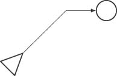
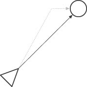
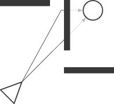
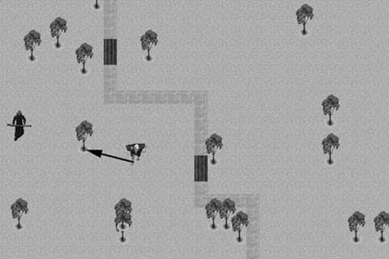
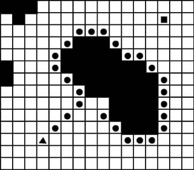
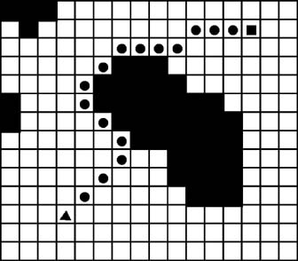

|
|
< Day Day Up > |
|
6.1 Basic PathfindingAt its most basic level, pathfinding is simply the process of moving the position of a game character from its initial location to a desired destination. This is essentially the same principle we used in the basic chasing algorithm we showed you in Chapter 2. Example 6-1 shows how you can use this algorithm for basic pathfinding. Example 6-1. Basic pathfinding algorithm
if(positionX > destinationX)
positionX--;
else if(positionX < destinationX)
positionX++;
if(positionY > destinationY)
positionY--;
else if(positionY < destinationY)
positionY++;
In this example, the position of the game character is specified using the positionX and positionY variables. Each time this code is executed, the positionX and positionY coordinates are either increased or decreased so that the game character's position moves closer to the destinationX and destinationY coordinates. This is a simple and fast solution to a basic pathfinding problem. However, like its chasing algorithm counterpart from Chapter 2, it does have some limitations. This method produces an unnatural-looking path to the destination. The game character moves diagonally toward the goal until it reaches the point where it is on the same x- or y-axis as the destination position. It then moves in a straight horizontal or vertical path until it reaches its destination. Figure 6-1 illustrates how this looks. Figure 6-1. Simple path movementAs Figure 6-1 shows, the game character (the triangle) follows a rather unnatural path to the destination (the circle). A better approach would be to move in a more natural line-of-sight path. As with the line-of-sight chase function we showed you in Chapter 2, you can accomplish this by using the Bresenham line algorithm. Figure 6-2 illustrates how a line-of-sight path using the Bresenham line algorithm appears relative to the basic pathfinding algorithm shown in Example 6-1. Figure 6-2. Line-of-sight path movementAs you can see in Figure 6-2, the line-of-sight approach produces a more natural-looking path. Although the line-of-sight method does have some advantages, both of the previous methods produce accurate results for basic pathfinding. They are both simple and relatively fast, so you should use them whenever possible. However, the two previous methods aren't practical in many scenarios. For example, having obstacles in the game environment, such as in Figure 6-3, can require some additional considerations. Figure 6-3. Problems with obstacles6.2.1 Random Movement Obstacle AvoidanceRandom movement can be a simple and effective method of obstacle avoidance. This works particularly well in an environment with relatively few obstacles. A game environment with sparsely placed trees, such as the one shown in Figure 6-4, is a good candidate for the random movement technique. Figure 6-4. Random movementAs Figure 6-4 shows, the player is not in the troll's line of sight. However, because so few obstacles are in the environment, when you simply move the troll in almost any direction the player will enter the troll's line of sight. In this scenario, a CPU-intensive pathfinding algorithm would be overkill. On the other hand, if the game environment were composed of many rooms with small doorways between each room, the random movement method probably wouldn't be an ideal solution. Example 6-2 shows the basic algorithm used for random movement obstacle avoidance. Example 6-2. Random movement obstacle avoidance algorithm
if Player In Line of Sight
{
Follow Straight Path to Player
}
else
{
Move in Random Direction
}
computer-controlled character is moved in a random direction. Because so few obstacles are in the scene, it's likely that the player will be in the line of sight the next time through the game loop. 6.2.2 Tracing Around ObstaclesTracing around obstacles is another relatively simple method of obstacle avoidance. This method can be effective when attempting to find a path around large obstacles, such as a mountain range in a strategy or role-playing game. With this method, the computer-controlled character follows a simple pathfinding algorithm in an attempt to reach its goal. It continues along its path until it reaches an obstacle. At that point it switches to a tracing state. In the tracing state it follows the edge of the obstacle in an attempt to work its way around it. Figure 6-5 illustrates how a hypothetical computer-controlled character, shown as a triangle, would trace a path around an obstacle to get to its goal, shown as a square. Figure 6-5. Basic tracingBesides showing a path around the obstacle, Figure 6-5 also shows one of the problems with tracing: deciding when to stop tracing. As Figure 6-5 shows, the outskirts of the obstacle were traced, but the tracing went too far. In fact, it's almost back to the starting point. We need a way to determine when we should switch from the tracing state back to a simple pathfinding state. One way of accomplishing this is to calculate a line from the point the tracing starts to the desired destination. The computer-controlled character will continue in the tracing state until that line is crossed, at which point it reverts to the simple pathfinding state. This is shown in Figure 6-6. Figure 6-6. Improved tracingTracing the outskirts of the obstacle until the line connecting the starting point and desired destination is crossed ensures that the path doesn't loop back to the starting point. If another obstacle is encountered after switching back to the simple pathfinding state, it once again goes into the tracing state. This continues until the destination is reached. Another method is to incorporate a line-of-sight algorithm with the previous tracing method. Basically, at each step along the way, we utilize a line-of-sight algorithm to determine if a straight line-of-sight path can be followed to reach the destination. This method is illustrated in Figure 6-7. Figure 6-7. Tracing with line of sightAs Figure 6-7 shows, we follow the outskirts of the obstacle, but at each step we check to see if the destination is in the computer-controlled character's line of sight. If so, we switch from a tracing state to a line-of-sight pathfinding state. |
|
|
< Day Day Up > |
|